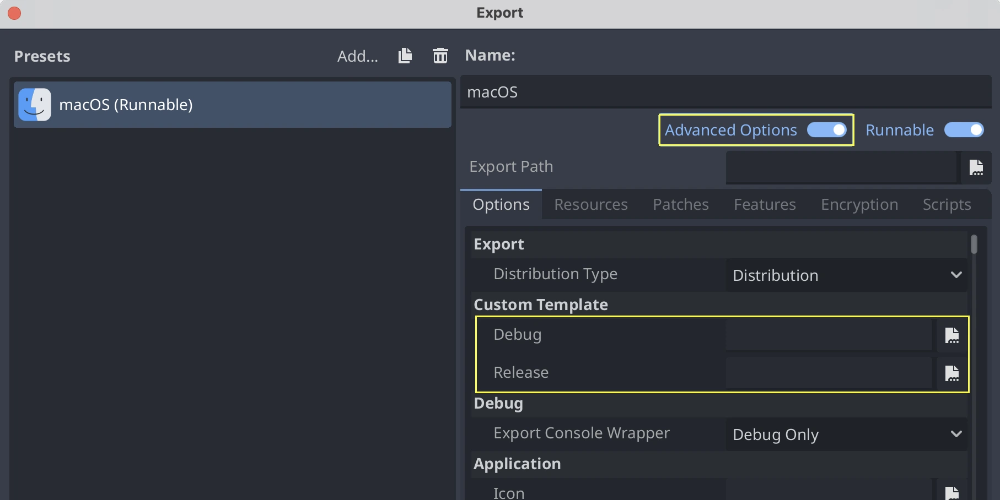

Compiling for macOS
Note
This page describes how to compile macOS editor and export template binaries from source. If you're looking to export your project to macOS instead, read Exporting for macOS.
Requirements
For compiling under macOS, the following is required:
SCons 4.4+ build system.
Xcode (or the more lightweight Command Line Tools for Xcode).
Vulkan SDK for MoltenVK (macOS doesn't support Vulkan out of the box). The latest Vulkan SDK version can be installed quickly by running
misc/scripts/install_vulkan_sdk_macos.shwithin the Godot source repository.
Note
If you have Homebrew installed, you can easily install SCons using the following command:
brew install scons
Installing Homebrew will also fetch the Command Line Tools for Xcode automatically if you don't have them already.
Similarly, if you have MacPorts installed, you can easily install SCons using the following command:
sudo port install scons
See also
To get the Godot source code for compiling, see Getting the source.
For a general overview of SCons usage for Godot, see Introduction to the buildsystem.
Compiling
Start a terminal, go to the root directory of the engine source code.
To compile for Intel (x86-64) powered Macs, use:
scons platform=macos arch=x86_64
To compile for Apple Silicon (ARM64) powered Macs, use:
scons platform=macos arch=arm64
Tip
If you are compiling Godot to make changes or contribute to the engine,
you may want to use the SCons options dev_build=yes or dev_mode=yes.
See Development and production aliases
for more info.
If all goes well, the resulting binary executable will be placed in the
bin/ subdirectory. This executable file contains the whole engine and
runs without any dependencies. Executing it will bring up the Project
Manager.
Note
Using a standalone editor executable is not recommended, it should be always packaged into a
.app bundle to avoid UI activation issues.
Note
If you want to use separate editor settings for your own Godot builds
and official releases, you can enable
Self-contained mode by creating a file called
._sc_ or _sc_ in the bin/ folder.
Compiling with AccessKit support
AccessKit provides support for screen readers.
Compiling with AccessKit requires additional dependencies to be installed.
If you wish to skip this step, you can use the accesskit=no SCons option.
You can install the required dependencies by running
python misc/scripts/install_accesskit.py
in the Godot source repository. After running this script, compile Godot as usual.
Note
You can optionally build the godot-accesskit-static libraries yourself with the following steps:
Clone the godot-accesskit-c-static directory and navigate to it.
Run the following command:
cd accesskit-c
cmake -S . -B build -DCMAKE_BUILD_TYPE=Release
cmake --build build
cmake --install build
The AccessKit static library should be built using the same compiler you are using for building Godot.
To compile Godot with a custom build of AccessKit, add accesskit_sdk_path={path} to
tell SCons where to look for the AccessKit libraries:
scons platform=macos accesskit_sdk_path=<...>
Compiling with ANGLE support
ANGLE provides a translation layer from OpenGL ES 3.x to Metal and can be used to improve support for the Compatibility renderer on some older GPUs with outdated OpenGL drivers.
Compiling with ANGLE requires additional dependencies to be installed.
If you wish to skip this step, you can use the angle=no SCons option.
You can install the required dependencies by running
python misc/scripts/install_angle.py
in the Godot source repository. After running this script, compile Godot as usual.
Note
You can optionally build the godot-angle-static libraries yourself with the following steps:
Clone the godot-angle-static directory and navigate to it.
Run the following command:
git submodule update --init
./update_angle.sh
scons
You can also specify the build architecture using arch={architecture}.
The ANGLE static library should be built using the same compiler you are using for building Godot.
To compile Godot with a custom build of ANGLE, add angle_libs={path} to
tell SCons where to look for the ANGLE libraries:
scons platform=macos angle_libs=<...>
Automatic .app bundle creation
To automatically create a .app bundle like in the official builds, use the generate_bundle=yes option on the last
SCons command used to build editor:
scons platform=macos arch=x86_64
scons platform=macos arch=arm64 generate_bundle=yes
Manual .app bundle creation
To support both architectures in a single "Universal 2" binary,
run the above two commands and then use lipo to bundle them together:
lipo -create bin/godot.macos.editor.x86_64 bin/godot.macos.editor.arm64 -output bin/godot.macos.editor.universal
To create a .app bundle, you need to use the template located in misc/dist/macos_tools.app. Typically, for an optimized
editor binary built with dev_build=yes:
cp -r misc/dist/macos_tools.app ./bin/Godot.app
mkdir -p bin/Godot.app/Contents/MacOS
cp bin/godot.macos.editor.universal bin/Godot.app/Contents/MacOS/Godot
chmod +x bin/Godot.app/Contents/MacOS/Godot
codesign --force --timestamp --options=runtime --entitlements misc/dist/macos/editor.entitlements -s - bin/Godot.app
Note
If you are building the master branch, you also need to include support
for the MoltenVK Vulkan portability library. By default, it will be linked
statically from your installation of the Vulkan SDK for macOS.
You can also choose to link it dynamically by passing use_volk=yes and
including the dynamic library in your .app bundle:
mkdir -p <Godot bundle name>.app/Contents/Frameworks
cp <Vulkan SDK path>/macOS/lib/libMoltenVK.dylib <Godot bundle name>.app/Contents/Frameworks/libMoltenVK.dylib
Running a headless/server build
To run in headless mode which provides editor functionality to export projects in an automated manner, use the normal build:
scons platform=macos target=editor
And then use the --headless command line argument:
./bin/godot.macos.editor.x86_64 --headless
To compile a debug server build which can be used with remote debugging tools, use:
scons platform=macos target=template_debug
To compile a release server build which is optimized to run dedicated game servers, use:
scons platform=macos target=template_release production=yes
Building export templates
To build macOS export templates, you have to compile using the targets without
the editor: target=template_release (release template) and
target=template_debug.
Official templates are Universal 2 binaries which support both ARM64 and Intel x86_64 architectures.
To support ARM64 (Apple Silicon) + Intel x86_64:
scons platform=macos target=template_debug arch=arm64 scons platform=macos target=template_release arch=arm64 scons platform=macos target=template_debug arch=x86_64 scons platform=macos target=template_release arch=x86_64 generate_bundle=yes
To support ARM64 (Apple Silicon) only (smaller file size, but less compatible with older hardware):
scons platform=macos target=template_debug arch=arm64 scons platform=macos target=template_release arch=arm64 generate_bundle=yes
To create a .app bundle like in the official builds, you need to use the
template located in misc/dist/macos_template.app. This process can be automated by using
the generate_bundle=yes option on the last SCons command used to build export templates
(so that all binaries can be included). This will create a godot_macos.zip file in bin/
and additionally takes care of calling lipo to create a Universal 2 binary from two separate
ARM64 and x86_64 binaries (if both were compiled beforehand).
Note
You also need to include support for the MoltenVK Vulkan portability
library. By default, it will be linked statically from your installation of
the Vulkan SDK for macOS. You can also choose to link it dynamically by
passing use_volk=yes and including the dynamic library in your .app
bundle:
mkdir -p macos_template.app/Contents/Frameworks
cp <Vulkan SDK path>/macOS/libs/libMoltenVK.dylib macos_template.app/Contents/Frameworks/libMoltenVK.dylib
In most cases, static linking should be preferred as it makes distribution easier. The main upside of dynamic linking is that it allows updating MoltenVK without having to recompile export templates.
If you created the .app manually, you can zip the macos_template.app folder
to reproduce the macos.zip template from the official Godot distribution:
zip -r9 macos.zip macos_template.app
To use your custom export templates, you can select the godot_macos.zip file in
the advanced options of your export presets:

Alternatively, if you want all your presets to use your custom export template, you
can rename the godot_macos.zip file to macos.zip and move it to the default
location for export templates:
- ::
~/Library/Application Support/Godot/export_templates/<GODOT_VERSION>/macos.zip
Cross-compiling for macOS from Linux
It is possible to compile for macOS in a Linux environment (and maybe also in Windows using the Windows Subsystem for Linux). For that, you'll need to install OSXCross to be able to use macOS as a target. First, follow the instructions to install it:
Clone the OSXCross repository somewhere on your machine (or download a ZIP file and extract it somewhere), e.g.:
git clone --depth=1 https://github.com/tpoechtrager/osxcross.git "$HOME/osxcross"
Follow the instructions to package the SDK: https://github.com/tpoechtrager/osxcross#packaging-the-sdk
Follow the instructions to install OSXCross: https://github.com/tpoechtrager/osxcross#installation
After that, you will need to define the OSXCROSS_ROOT as the path to
the OSXCross installation (the same place where you cloned the
repository/extracted the zip), e.g.:
export OSXCROSS_ROOT="$HOME/osxcross"
Now you can compile with SCons like you normally would:
scons platform=macos
If you have an OSXCross SDK version different from the one expected by the SCons buildsystem, you can specify a custom one with the osxcross_sdk argument:
scons platform=macos osxcross_sdk=darwin15
Troubleshooting
Fatal error: 'cstdint' file not found
If you get a compilation error of this form early on, it's likely because the Xcode command line tools installation needs to be repaired after a macOS or Xcode update:
./core/typedefs.h:45:10: fatal error: 'cstdint' file not found
45 | #include <cstdint>
| ^~~~~~~~~
Run these two commands to reinstall Xcode command line tools (enter your administrator password as needed):
sudo rm -rf /Library/Developer/CommandLineTools
sudo xcode-select --install
If it still does not work, try updating Xcode from the Mac App Store and try again.